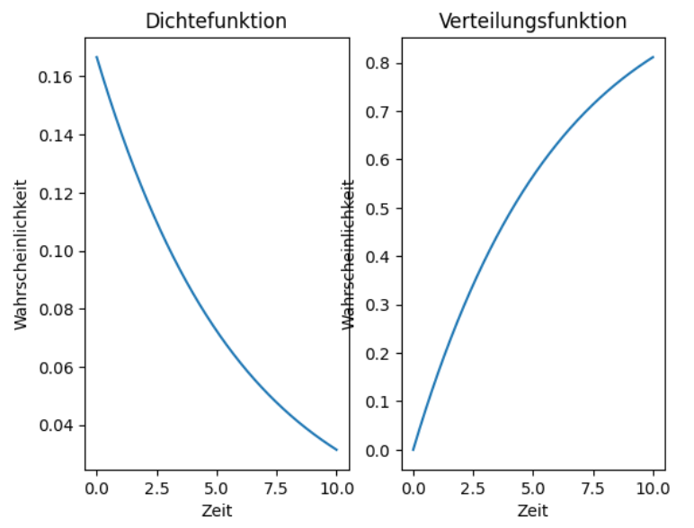

Exponentialverteilung¶
Was ist das für eine Verteilung und wozu dient sie?¶
Die Exponentialverteilung ist eine spezielle Wahrscheinlichkeitsverteilung, die in der Statistik verwendet wird. Sie beschreibt, wie lange es im Durchschnitt dauert, bis ein bestimmtes zufälliges Ereignis, das erste Mal eintritt.
- Sie ist gedächtnislos, was bedeutet, dass es keinen unterschied macht, wie lange man auf ein Ereignis wartet. Die Wahrscheinlichkeit, dass es Eintritt ist zu jedem Zeitpunkt gleich. Die Warscheinlichkeit hängt also nur davon ab, wie lange man noch darauf warten muss, und nicht davon, wie lange man schon gewartet hat.
- Der Wert ist immer \(\geq 0\) (es gibt keine negativen Zeiten).
Warning
Die Exponentialverteilung ist ein theoretisches Modell, das in der Praxis oft verwendet wird, um Prozesse zu vereinfachen. Tatsächliche Ereignisse können von dieser Verteilung abweichen, da reale Daten häufig nicht exakt der Exponentialverteilung folgen. Dennoch ist sie nützlich, weil sie mathematisch leicht handhabbar ist und grundlegende Einblicke liefert.
Dichtefunktion
Die Dichtefunktion, gibt die Wahrscheinlichkeitsdichte an, dass das Ereignis nach einer Zeit \(x\) eintritt.
Für \(x < 0\) gilt \(f(x) = 0\), da negative Zeiten keinen Sinn ergeben.
Verteilungsfunktion
Die Dichtefunktion gibt die Wahrscheinlichkeitsdichte dafür an, dass das Ereignis nach einer Zeit \(x\) eintritt:
\(\lambda\): Kehrwert der durchschnittlichen Zeit bis zum Ereignis
\(e\): Die Eulersche Zahl (\(\approx 2{,}71828\)).
Beispiel
Tritt ein Ereignis im Mittel einmal alle 5 Minuten ein, dann ist \(\lambda = \frac{1}{5} = 0{,}2\).
Erwartungswert
Wie lange muss man durchschnittlich warten, bis das Ereignis auftritt:
Tritt ein Ereignis im Durchschnitt \(\lambda\)-mal pro Einheit auf, dann dauert es im Mittel \(\frac{1}{\lambda}\) Einheiten, bis es eintritt.
Varianz
Sie misst, wie stark die Wartezeiten um den Erwartungswert streuen
Eine größere Rate \(\lambda\) führt dazu, dass die Varianz kleiner wird, da die Streuung bei häufigeren Ereignissen kleiner ist.
Anwendungsbereiche
Man verwendet die Exponentialverteilung, wenn ...
- Wie lange ein Gerät funktioniert, bevor es kaputtgeht.
- Radioaktiver Zerfall
- Zeit zwischen zwei Anrufen(im Callcenter)
Beispiel: Wartezeit an einer Kasse
An einer Supermarktkasse dauert es im Durchschnitt 3 Minuten, bis ein Kunde fertig bedient wird.
Fragen:
Wie groß ist die Wahrscheinlichkeit, dass die Bedienung eines Kunden weniger als 2 Minuten dauert?
Wie groß ist die Wahrscheinlichkeit, dass die Bedienung eines Kunden länger als 4 Minuten dauert?
Gegebene Werte:
Durchschnittliche Wartezeit: \(E(X) = 3\) Minuten
Parameter der Exponentialverteilung:
Formeln:
Verteilungsfunktion für P(X <= x) :
Gegenwahrscheinlichkeit für P(X > x) :
Rechnungen:
Wahrscheinlichkeit für weniger als 2 Minuten:
Ergebnis: Die Wahrscheinlichkeit, dass die Bedienung weniger als 2 Minuten dauert, beträgt etwa 48,6 %.
Wahrscheinlichkeit für mehr als 4 Minuten:
Ergebnis: Die Wahrscheinlichkeit, dass die Bedienung länger als 4 Minuten dauert, beträgt etwa 26,4 %.
Zusammenfassung:
Rechenaufgaben/MC-Fragen/Freitext-Aufgaben/Wissenfragen erstellen.¶
Aufgabe 1
Die tägliche Ausfallrate ist laut Hersteller \(\lambda = 0{,}001\).
- Wie ist die durchschnittliche Zeit bis ein Handy nicht mehr funktioniert
- Wie hoch ist die Wahrscheinlichkeit, dass dein Handy nach einem Jahr noch funktioniert ?
Lösung
Erwartungswert: \(E(X) = \frac{1}{\lambda} = \frac{1}{0{,}001} = 1000\)
Antwort 1: Sie durchschnittliche Zeit bis ein Handy nicht mehr funktioniert sind 1000 Tage
Antwort 2: Nach 365 Tagen sind 30,6% aller Geräte ausgefallen. Die Wahrscheinlichkeit, dass unser Gerät nach 365 Tagen noch funktionieren wird, liegt also bei 69,4%.
Aufgabe 2
Nach 400 Tagen sind 3% der Computer defekt. Bestimme \(\lambda\).
Lösung
\(\(F(400) = 0,03\)\) In die Verteilungsfunktion Eingesetzt:
Nach \(\lambda\) auflösen:
Exponentialausdruck isolieren:
Natürlichen logarithmus auf beiden Seiten anwenden:
ln(0,97) berechnen:
Eingesetzt in die Gleichung:
Zum Schluss nach \(\lambda\) auflösen:
Antwort: Der Wert von \(\lambda\) beträgt etwa 0,00007615 pro Tag.
Multiple Choice Aufgaben¶
MC-Frage 1
Ein Gerät hat eine mittlere Haltbarkeit von 5 Jahren. Mit welcher Wahrscheinlichkeit ist ein Gerät 5 Jahre nach Anschaffung noch gut?
A) 37%
B) 50%
C) 63%
D) keine dieser Antworten
Lösung
A
MC-Frage 2
Welche Verteilungsfunktion gehört zum größeren Lambda?

A) die Helle
B) die Dunkle
C) Die Linien haben das gleiche Lambda
D) Das kann man so nicht beurteilen
Lösung
B
Programmierung¶
1 2 3 4 5 6 7 8 9 10 11 12 13 14 15 16 17 18 19 20 21 22 23 24 | |

- Numpy wurde hier verwendet, um einen gleichmäßigen Wertebreich zu erstellen, und um die Exponentialberechnungen durchzuführen
- Matplotlib.pyplot wurde zum Visualisieren verwendet.